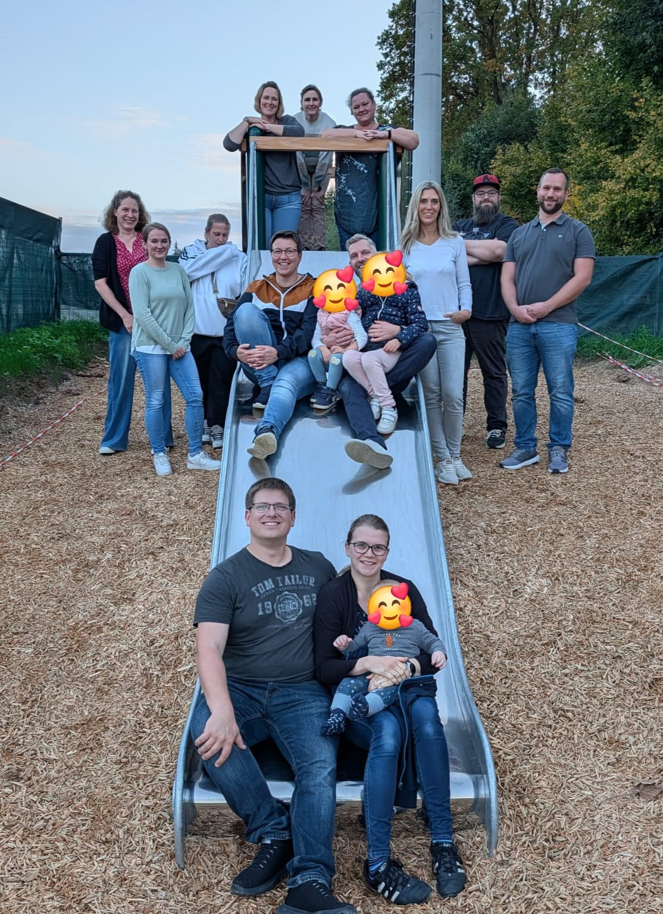
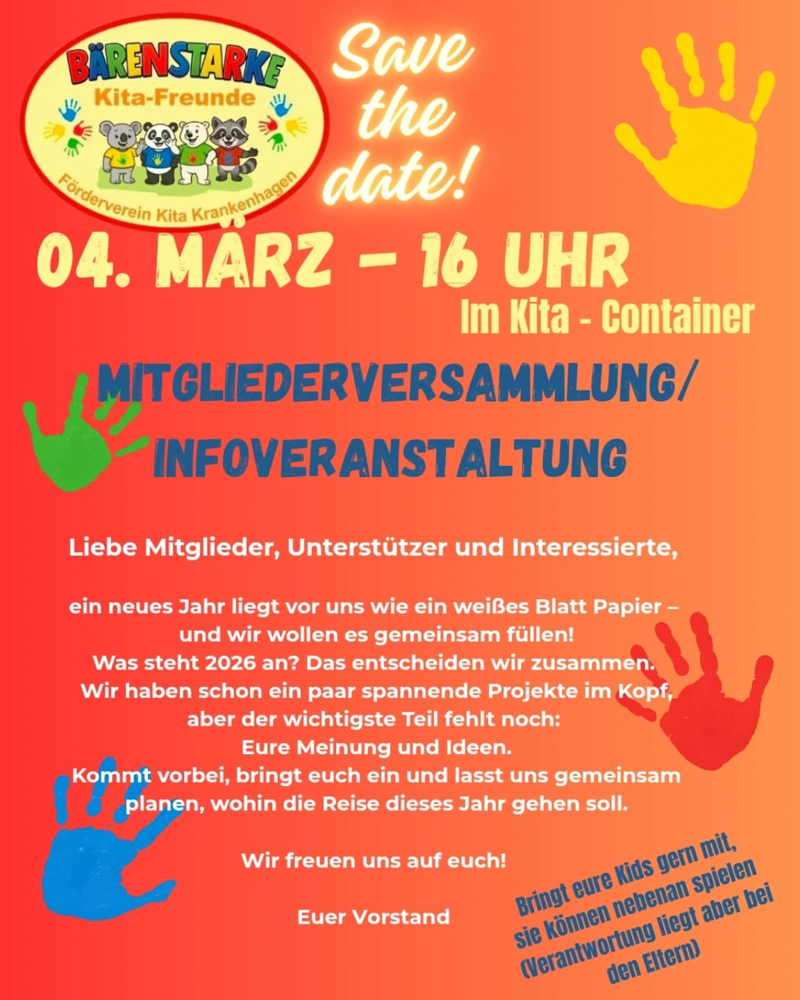

Förderverein
Bärenstarke Kita-Freunde aus Krankenhagen
Wer wir sind… Seit 2025 setzen wir uns als Förderverein mit Herz und Hand für die Kindertagesstätte Bärenstark in Krankenhagen ein. Wir sind ein lebendiges Netzwerk aus engagierten Elternteilen, MitarbeiterInnen, Familienangehörigen und weiteren Interessierten. Gemeinsam bringen wir gute und kreative Ideen ein, um die Kita und die Entwicklung der Kinder optimal zu unterstützen und zu bereichern.
„Jede Idee, jede Mitgliedschaft und jeder Euro hilft der Kita und den Kindern.“

Ob Spielsachen, ein kleiner Geldbetrag oder persönliche Unterstützung – es gibt viele Wege, unsere Kita zu stärken. Materielle Spenden können dort eingesetzt werden, wo sie den Alltag der Kinder bereichern, oder bei Aktionen wie einem Flohmarkt in finanzielle Hilfe für Projekte verwandelt werden. Finanzielle Beiträge ermöglichen uns zum Beispiel besondere Anschaffungen, Ausflüge oder Feste, die sonst nicht möglich wären. Und wer lieber selbst mit anpackt, ist genauso willkommen: beim Planen und Durchführen von Aktionen, beim Organisieren im Hintergrund oder als aktives Vereinsmitglied. Jede Form der Unterstützung zählt und macht die Kita Bärenstark ein Stückchen reicher an Möglichkeiten.
Unsere Ziele / was treibt uns an
Unser Ziel ist es die Kita über die reguläre Ausstattung hinaus zu fördern und Projekte zu ermöglichen, die den Alltag der Kinder bereichern. Ob neue Spielgeräte, Ausflüge, kreative Materialien oder Feste – wir möchten dazu beitragen, dass die Kita ein Ort bleibt, an dem Kinder sich wohlfühlen, entdecken und wachsen können. Der Förderverein lebt vom Mitmachen und Mitgestalten: Jede Idee, jede helfende Hand und jeder Beitrag zählt. Gemeinsam schaffen wir Dinge, die allein nicht möglich wären – für unsere Kinder und ihre Zukunft. Haben wir Ihr Interesse geweckt?
Werden Sie Teil unseres Fördervereins, BÄRENSTARKE Kita-Freunde e.V.”! Wir freuen uns auf Sie!
Anmeldung / Mitgliedschaft
Wenn Sie Mitglied in unserem Förderverein werden möchten, können Sie hier das Anmeldeformular herunterladen, ausdrucken und ausgefüllt in der Kita abgeben.
Termine / Veranstaltungen
04.03.2026 16 Uhr Mitgliederversammlung im Kita - Container

Unsere Sponsoren / Unterstützer
Werden Sie unser erster Sponsor!
Kontakt
Erste Vorsitzende: Annika Ehlers
Tel: +49 1525 3954293
E-Mail: Baerenstarke-kitafreunde@web.de
Förderverein Bärenstarke Kita-Freunde e.V., Wasserweg 2, 31737 Krankenhagen
Bei jeder Geldspende können wir Ihnen eine Spendenquittung ausstellen!
Bankverbindung:
Bärenstarke Kita-Freunde e.V.i.
IBAN: DE45255914130066284400
BIC: GENODEF1BCK
Volksbank in Schaumburg und Nienburg eG
PayPal:
baerenstarke-kitafreunde@web.de